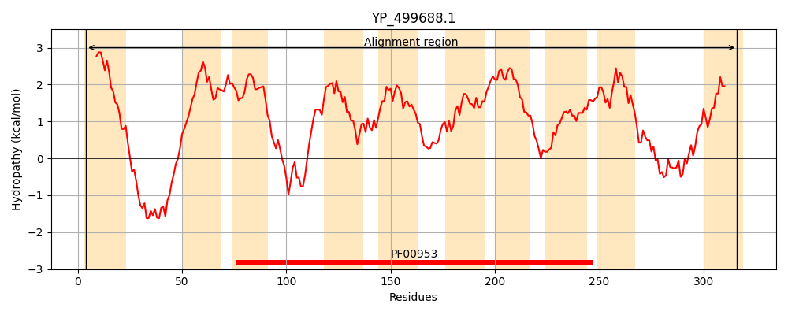
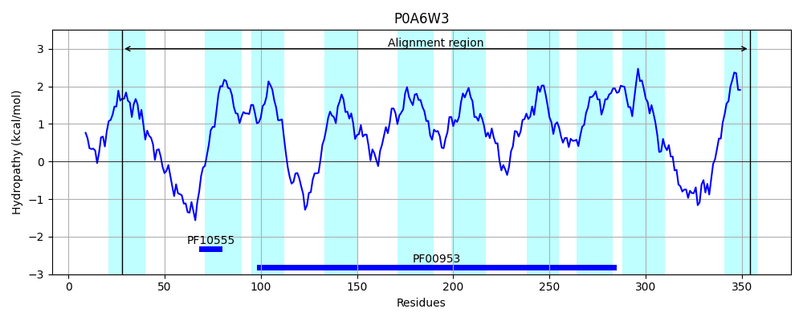
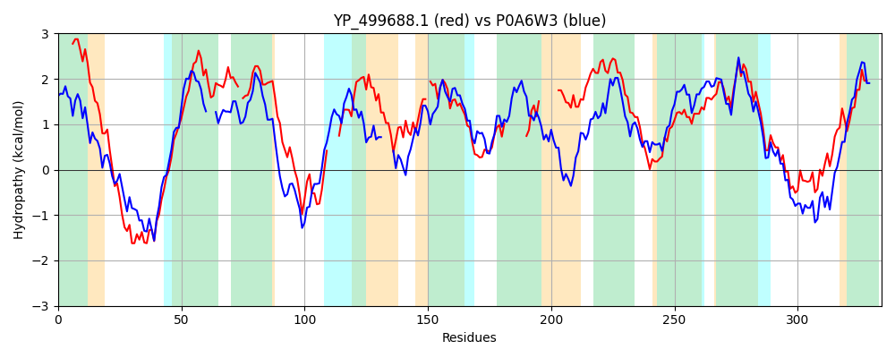

Hit Accession: P0A6W3
Hit TCID: 9.B.146.1.6
Hit Description: gnl|BL_ORD_ID|8604 gnl|TC-DB|P0A6W3|9.B.146.1.6 Phospho-N-acetylmuramoyl-pentapeptide-transferase OS=Escherichia coli (strain K12) GN=mraY PE=1 SV=1
Mach Len: 334
e:0.000000
Query TMS Count : 10
Hit TMS Count: 10
TMS-Overlap Score: 6.250000
Predicted Substrates:None
BLAST Alignment:
Score: 617 , Bit scores: 242 bits, E-value: 4.0e-78, Alignment length: 334, Percentage identity: 42
Query: 4 VYALLALVITFVLVPVLIPTLKRMKFGQSIREEGPQSHMKKTGTPTMGGLTFLLSIVITSLVAIIFVDQANPII-LLLFVTIGFGLIGFIDDYIIVVKKNNQGLTSKQKF----LAQIGIAIIFFVLSNVFHLVNFSTSIHIPFTNVAIP-LSFAYVIFIVFWQVGFSNAVNLTDGLDGLAT--------GLSIIG-------FTMYAIMSFVLGETAIGIFCIIMLFALLGFLPYNINPAKVFMGDTGSLALGGIFATISIMLNQELSLIFIGLVFVIETLSVMLQVASFKLTGKRIFKMSPIHHHFELIGWSEWKVVTVFWAVGLISGLIGL 316
V L AL I+ + P +I L+++ FGQ +R +GP+SH K GTPTMGG+ L +IVI+ L ++ +NP + +L V +G+G+IGF+DDY VV+K+ +GL ++ K+ + +G+A ++ +T + +PF +P L Y++ F VG NAVNLTDGLDGLA G +++ F Y + ++ + I C ++ A LGFL +N PA+VFMGD GSLALGG I+++L QE L+ +G VFV+ETLSV+LQV SFKL G+RIF+M+PIHHH+EL GW E +V+ FW + L+ LIGL
Sbjct: 28 VSLLTALFISLWMGPRMIAHLQKLSFGQVVRNDGPESHFSKRGTPTMGGIMILTAIVISVL---LWAYPSNPYVWCVLVVLVGYGVIGFVDDYRKVVRKDTKGLIARWKYFWMSVIALGVAFALYLAGKDTP----ATQLVVPFFKDVMPQLGLFYILLAYFVIVGTGNAVNLTDGLDGLAIMPTVFVAGGFALVAWATGNMNFASYLHIPYLRHAGELVIVCTAIVGAGLGFLWFNTYPAQVFMGDVGSLALGGALGIIAVLLRQEFLLVIMGGVFVVETLSVILQVGSFKLRGQRIFRMAPIHHHYELKGWPEPRVIVRFWIISLMLVLIGL 354 | Protein Hydropathy Plots: |
|---|
|  |  |
Pairwise Alignment-Hydropathy Plot:
|
|---|
|  |